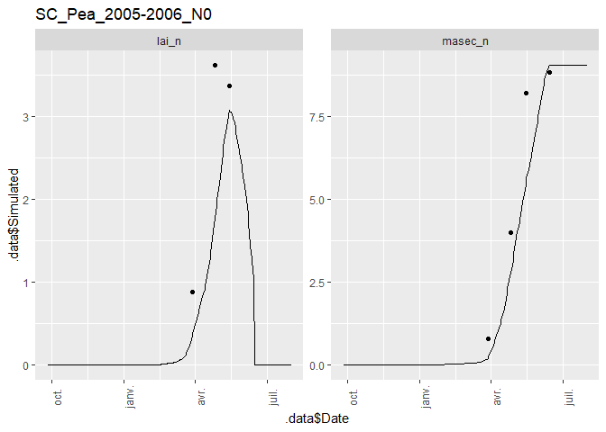
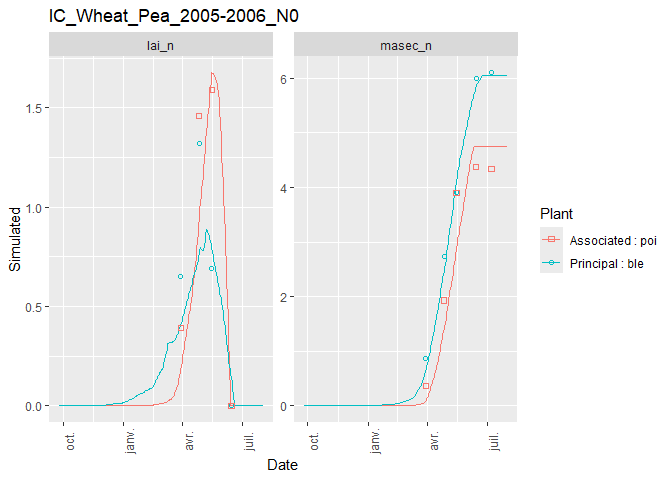
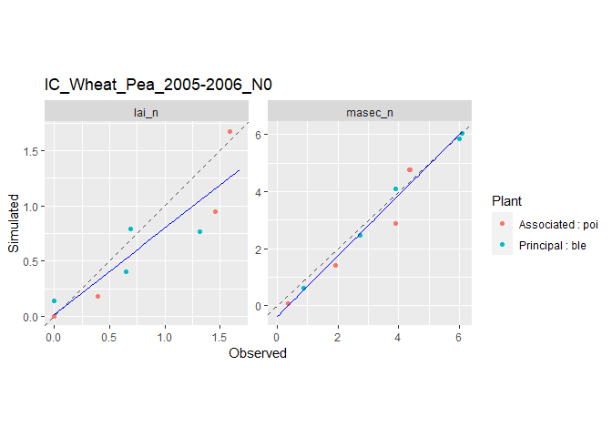

CroPlotR aims at the standardization of the process of analyzing the outputs from crop model such as STICS, APSIM or really any model.
The package is under intensive development and is in a very early version. The functions may heavily change from one version to another until a more stable version is released.
1. Installation
You can install the released version of CroPlotR from Github either using devtools or the lightweight remotes package:
- With
devtools
devtools::install_github("SticsRPacks/CroPlotR@*release")
- With
remotes
# install.packages("remotes") remotes::install_github("SticsRPacks/CroPlotR@*release")
Normally, all the package dependencies will be installed for CRAN packages.
2. Examples
At the moment, only one function is exported for plots plot() (and its alias autoplot()), and one for the statistics summary(). These function should be the only one you need for all your plots and summary statistics.
Here is an example using STICS with a simulation of three situations (called USM in STICS) with their observations:
- an intercrop of Wheat and pea
- a Pea in sole crop
- a Wheat in sole crop
Let’s import the simulation and observation data:
library(CroPlotR) #> Learn CroPlotR at: https://SticsRPacks.github.io/CroPlotR # Importing an example with three situations with observation: workspace= system.file(file.path("extdata", "stics_example_1"), package = "CroPlotR") situations= SticsRFiles::get_usms_list(usm_path = file.path(workspace,"usms.xml")) sim= SticsRFiles::get_daily_results(workspace = workspace) obs= SticsRFiles::get_obs(workspace = workspace, usm_name = situations, usms_filename = "usms.xml") #> [1] "IC_Wheat_Pea_2005-2006_N0p.obs" "IC_Wheat_Pea_2005-2006_N0a.obs" #> [1] "SC_Pea_2005-2006_N0.obs" #> [1] "SC_Wheat_2005-2006_N0.obs"
2.1 Plotting
2.1.1 Dynamic plots
Here is an application of dynamic plots for the 3 situations:
plot(sim, obs= obs) #> ! Two columns have the same name with different typographies of the variable name : qnplanteTwo columns have the same name with different typographies of the variable name : qnplante_sd #> $`IC_Wheat_Pea_2005-2006_N0`



Note that the obs argument is explicitly named. This is because the first argument of the function is ... (we’ll see why in a minute).
It is possible to choose the situations that we want to plot on the same graph thanks to the successive parameter. This is particularly useful when situations follow one another over time.
workspace= system.file(file.path("extdata", "stics_example_successive"), package = "CroPlotR") situations= SticsRFiles::get_usms_list(usm_path = file.path(workspace,"usms.xml")) sim_rot= SticsRFiles::get_daily_results(workspace = workspace, usm_name = situations) plot(sim_rot, var = c("resmes","masec_n"), successive = list(list("demo_Wheat1","demo_BareSoil2","demo_maize3"))) #> $`demo_Wheat1 | demo_BareSoil2 | demo_maize3 | `

We can also overlay variables thanks to the “overlap” parameter with dynamic plots.
plot(sim, obs= obs, overlap = list(list("lai_n","masec_n"))) #> ! Two columns have the same name with different typographies of the variable name : qnplanteTwo columns have the same name with different typographies of the variable name : qnplante_sd #> $`IC_Wheat_Pea_2005-2006_N0`


2.1.2 Scatter plots
Here are the same plots, but presented as scatter plots:
# Only plotting the first situation for this one: plots= plot(sim, obs= obs, type = "scatter", all_situations = FALSE) #> ! Two columns have the same name with different typographies of the variable name : qnplanteTwo columns have the same name with different typographies of the variable name : qnplante_sd plots[[1]]

Residues can also be represented against observations:
# Only plotting the first situation again: plots= plot(sim, obs= obs, type = "scatter", select_scat = "res", all_situations = FALSE) #> ! Two columns have the same name with different typographies of the variable name : qnplanteTwo columns have the same name with different typographies of the variable name : qnplante_sd plots[[1]]

All these data can also be represented with a single graph for all situations:
plot(sim, obs= obs, type = "scatter", all_situations = TRUE) #> ! Two columns have the same name with different typographies of the variable name : qnplanteTwo columns have the same name with different typographies of the variable name : qnplante_sd #> $all_situations

When plotting residual scatter plots, reference_var allows to choose the reference variable on the x-axis. Thus, the observations or simulations of this reference variable (to be chosen by suffixing the variable name by “_obs” or “_sim”) will be compared to the residuals of each of the variables.
plot(sim, obs= obs, type = "scatter", select_scat="res", all_situations = TRUE, reference_var = "lai_n_sim") #> ! Two columns have the same name with different typographies of the variable name : qnplanteTwo columns have the same name with different typographies of the variable name : qnplante_sd #> $all_situations

The points on the graphs can be shown in different shapes to differentiate between situations when all_situations = TRUE. If desired, the names of the situations can be displayed.
plot(sim, obs= obs, type = "scatter", all_situations = TRUE, shape_sit = "txt") #> ! Two columns have the same name with different typographies of the variable name : qnplanteTwo columns have the same name with different typographies of the variable name : qnplante_sd #> $all_situations

As you can see, this can quickly become unreadable depending on the number of points; That is why you can simply assign a different symbol to each situation.
plot(sim, obs= obs, type = "scatter", all_situations = TRUE, shape_sit = "symbol") #> ! Two columns have the same name with different typographies of the variable name : qnplanteTwo columns have the same name with different typographies of the variable name : qnplante_sd #> $all_situations

It is also possible to represent a group of situations with the same symbol when, for example, clusters are identified.
plot(sim, obs= obs, type = "scatter", all_situations = TRUE, shape_sit = "group", situation_group = list(list("SC_Pea_2005-2006_N0","SC_Wheat_2005-2006_N0"))) #> ! Two columns have the same name with different typographies of the variable name : qnplanteTwo columns have the same name with different typographies of the variable name : qnplante_sd #> $all_situations

By default, all variables are returned by plot(), but you can filter them using the var argument:
plot(sim, obs= obs, type = "scatter", all_situations = TRUE, var=c("lai_n")) #> ! Two columns have the same name with different typographies of the variable name : qnplanteTwo columns have the same name with different typographies of the variable name : qnplante_sd #> $all_situations

Error bars related to observations can also be added to the graph using the obs_sd parameter which must be of the same shape as obs. In our example, we will create a false data frame with the only purpose of having a preview of the result. To have 95% confidence, the error bar is equal to two standard deviations on each side of the point.
obs_sd = obs obs_sd$`SC_Pea_2005-2006_N0`[,-c(1,2,3,4,5,34)]= 0.05*obs_sd$`SC_Pea_2005-2006_N0`[,-c(1,2,3,4,5,34)] obs_sd$`SC_Wheat_2005-2006_N0`[,-c(1,2,3,4,5,36)]= 0.2*obs_sd$`SC_Wheat_2005-2006_N0`[,-c(1,2,3,4,5,36)] plot(sim, obs= obs, obs_sd= obs_sd, type = "scatter", all_situations = TRUE) #> ! Two columns have the same name with different typographies of the variable name : qnplanteTwo columns have the same name with different typographies of the variable name : qnplante_sd #> $all_situations

2.1.3 Group comparison
We can compare groups of simulations alongside by simply adding the simulations objects one after the other (that is why the first argument of the function is ...). Group simulations can be the results of simulations from different model versions, or simulations with different parameter values.
workspace2= system.file(file.path("extdata", "stics_example_2"), package = "CroPlotR") sim2= SticsRFiles::get_daily_results(workspace = workspace2) plot(sim, sim2, obs= obs, all_situations = FALSE) #> $`IC_Wheat_Pea_2005-2006_N0`

Here only one plot is outputed because workspace2 only contains the intercrop situation.
We can also name the corresponding group in the plot by naming them while passing to the plot() function:
plot("New version"= sim, original= sim2, obs= obs, type = "scatter", all_situations = FALSE) #> $`IC_Wheat_Pea_2005-2006_N0`

2.1.4 Plot saving
The plots can be saved to disk using the plot_save() function as follows:
plots= plot("New version"= sim, original= sim2, obs= obs, type = "scatter") plot_save(plot = plots, path = "path/to/directory",suffix = "_scatter") # or by piping: plots= plot("New version"= sim, original= sim2, obs= obs, type = "scatter")%>% plot_save(., path = "path/to/directory",suffix = "_scatter")
2.1.5 Plot extracting
When we have plots with several variables and several situations, the extract_plot function allows to keep the situations and variables that we need.
In the following example, we want to extract the intercrop situation and the “masec_n” variable.
plots= plot(sim, obs= obs, type = "scatter", all_situations = FALSE) #> ! Two columns have the same name with different typographies of the variable name : qnplanteTwo columns have the same name with different typographies of the variable name : qnplante_sd extract_plot(plots,situations=c("IC_Wheat_Pea_2005-2006_N0"),var=c("masec_n")) #> $`IC_Wheat_Pea_2005-2006_N0`

2.2 Statistics
2.2.1 Simple case
Here is an application of summary statistics for the 3 situations:
summary(sim, obs= obs, all_situations = FALSE) #> ! Two columns have the same name with different typographies of the variable name : qnplanteTwo columns have the same name with different typographies of the variable name : qnplante_sd #> # A tibble: 8 x 41 #> # Groups: variable [2] #> group situation variable `paste(.data$Do~ n_obs mean_obs mean_sim r_means #> <chr> <chr> <chr> <chr> <int> <dbl> <dbl> <dbl> #> 1 Vers~ IC_Wheat~ lai_n Associated : poi 4 0.86 0.701 81.5 #> 2 Vers~ IC_Wheat~ lai_n Principal : ble 4 0.665 0.527 79.2 #> 3 Vers~ IC_Wheat~ masec_n Associated : poi 5 2.98 2.78 93.1 #> 4 Vers~ IC_Wheat~ masec_n Principal : ble 5 3.92 3.82 97.5 #> 5 Vers~ SC_Pea_2~ lai_n <NA> 3 2.62 1.74 66.3 #> 6 Vers~ SC_Pea_2~ masec_n <NA> 4 5.45 4.38 80.4 #> 7 Vers~ SC_Wheat~ lai_n <NA> 3 1.27 1.40 110. #> 8 Vers~ SC_Wheat~ masec_n <NA> 4 5.39 6.02 112. #> # ... with 33 more variables: sd_obs <dbl>, sd_sim <dbl>, CV_obs <dbl>, #> # CV_sim <dbl>, R2 <dbl>, SS_res <dbl>, Inter <dbl>, Slope <dbl>, RMSE <dbl>, #> # RMSEs <dbl>, RMSEu <dbl>, nRMSE <dbl>, rRMSE <dbl>, rRMSEs <dbl>, #> # rRMSEu <dbl>, pRMSEs <dbl>, pRMSEu <dbl>, SDSD <dbl>, LCS <dbl>, #> # rbias <dbl>, rSDSD <dbl>, rLCS <dbl>, MAE <dbl>, FVU <dbl>, MSE <dbl>, #> # EF <dbl>, Bias <dbl>, ABS <dbl>, MAPE <dbl>, RME <dbl>, tSTUD <dbl>, #> # tLimit <dbl>, Decision <chr>
Note that as for the plot() function the obs argument is explicitly named. This is because the first argument of the function is ... to be able to compare groups (i.e. model versions or simulation with different parameter values).
And as for the plot() function again, it is possible to compute the statistical criteria for all situations at once.
summary(sim, obs= obs, all_situations = TRUE) #> ! Two columns have the same name with different typographies of the variable name : qnplanteTwo columns have the same name with different typographies of the variable name : qnplante_sd #> # A tibble: 8 x 41 #> # Groups: variable [2] #> group situation variable `paste(.data$Do~ n_obs mean_obs mean_sim r_means #> <chr> <chr> <chr> <chr> <int> <dbl> <dbl> <dbl> #> 1 1 all_situ~ lai_n Associated : poi 4 0.86 0.701 81.5 #> 2 1 all_situ~ lai_n NA : ble 3 1.27 1.40 110. #> 3 1 all_situ~ lai_n NA : poi 3 2.62 1.74 66.3 #> 4 1 all_situ~ lai_n Principal : ble 4 0.665 0.527 79.2 #> 5 1 all_situ~ masec_n Associated : poi 5 2.98 2.78 93.1 #> 6 1 all_situ~ masec_n NA : ble 4 5.39 6.02 112. #> 7 1 all_situ~ masec_n NA : poi 4 5.45 4.38 80.4 #> 8 1 all_situ~ masec_n Principal : ble 5 3.92 3.82 97.5 #> # ... with 33 more variables: sd_obs <dbl>, sd_sim <dbl>, CV_obs <dbl>, #> # CV_sim <dbl>, R2 <dbl>, SS_res <dbl>, Inter <dbl>, Slope <dbl>, RMSE <dbl>, #> # RMSEs <dbl>, RMSEu <dbl>, nRMSE <dbl>, rRMSE <dbl>, rRMSEs <dbl>, #> # rRMSEu <dbl>, pRMSEs <dbl>, pRMSEu <dbl>, SDSD <dbl>, LCS <dbl>, #> # rbias <dbl>, rSDSD <dbl>, rLCS <dbl>, MAE <dbl>, FVU <dbl>, MSE <dbl>, #> # EF <dbl>, Bias <dbl>, ABS <dbl>, MAPE <dbl>, RME <dbl>, tSTUD <dbl>, #> # tLimit <dbl>, Decision <chr>
2.2.1 Several groups
We can get statistics for each group of simulations by simply adding the simulations objects one after the other (as for the plot() function).
summary(sim, sim2, obs= obs) #> ! Two columns have the same name with different typographies of the variable name : qnplanteTwo columns have the same name with different typographies of the variable name : qnplante_sd #> ! Two columns have the same name with different typographies of the variable name : qnplanteTwo columns have the same name with different typographies of the variable name : qnplante_sd #> # A tibble: 12 x 41 #> # Groups: variable [2] #> group situation variable `paste(.data$Do~ n_obs mean_obs mean_sim r_means #> <chr> <chr> <chr> <chr> <int> <dbl> <dbl> <dbl> #> 1 1 all_situ~ lai_n Associated : poi 4 0.86 0.701 81.5 #> 2 1 all_situ~ lai_n NA : ble 3 1.27 1.40 110. #> 3 1 all_situ~ lai_n NA : poi 3 2.62 1.74 66.3 #> 4 1 all_situ~ lai_n Principal : ble 4 0.665 0.527 79.2 #> 5 1 all_situ~ masec_n Associated : poi 5 2.98 2.78 93.1 #> 6 1 all_situ~ masec_n NA : ble 4 5.39 6.02 112. #> 7 1 all_situ~ masec_n NA : poi 4 5.45 4.38 80.4 #> 8 1 all_situ~ masec_n Principal : ble 5 3.92 3.82 97.5 #> 9 2 all_situ~ lai_n Associated : poi 4 0.86 0.365 42.4 #> 10 2 all_situ~ lai_n Principal : ble 4 0.665 0.834 125. #> 11 2 all_situ~ masec_n Associated : poi 5 2.98 1.12 37.4 #> 12 2 all_situ~ masec_n Principal : ble 5 3.92 5.52 141. #> # ... with 33 more variables: sd_obs <dbl>, sd_sim <dbl>, CV_obs <dbl>, #> # CV_sim <dbl>, R2 <dbl>, SS_res <dbl>, Inter <dbl>, Slope <dbl>, RMSE <dbl>, #> # RMSEs <dbl>, RMSEu <dbl>, nRMSE <dbl>, rRMSE <dbl>, rRMSEs <dbl>, #> # rRMSEu <dbl>, pRMSEs <dbl>, pRMSEu <dbl>, SDSD <dbl>, LCS <dbl>, #> # rbias <dbl>, rSDSD <dbl>, rLCS <dbl>, MAE <dbl>, FVU <dbl>, MSE <dbl>, #> # EF <dbl>, Bias <dbl>, ABS <dbl>, MAPE <dbl>, RME <dbl>, tSTUD <dbl>, #> # tLimit <dbl>, Decision <chr>
We can also name the corresponding group in the plot by naming them while passing to the summary() function:
summary("New version"= sim, original= sim2, obs= obs) #> ! Two columns have the same name with different typographies of the variable name : qnplanteTwo columns have the same name with different typographies of the variable name : qnplante_sd #> ! Two columns have the same name with different typographies of the variable name : qnplanteTwo columns have the same name with different typographies of the variable name : qnplante_sd #> # A tibble: 12 x 41 #> # Groups: variable [2] #> group situation variable `paste(.data$Do~ n_obs mean_obs mean_sim r_means #> <chr> <chr> <chr> <chr> <int> <dbl> <dbl> <dbl> #> 1 1 all_situ~ lai_n Associated : poi 4 0.86 0.701 81.5 #> 2 1 all_situ~ lai_n NA : ble 3 1.27 1.40 110. #> 3 1 all_situ~ lai_n NA : poi 3 2.62 1.74 66.3 #> 4 1 all_situ~ lai_n Principal : ble 4 0.665 0.527 79.2 #> 5 1 all_situ~ masec_n Associated : poi 5 2.98 2.78 93.1 #> 6 1 all_situ~ masec_n NA : ble 4 5.39 6.02 112. #> 7 1 all_situ~ masec_n NA : poi 4 5.45 4.38 80.4 #> 8 1 all_situ~ masec_n Principal : ble 5 3.92 3.82 97.5 #> 9 2 all_situ~ lai_n Associated : poi 4 0.86 0.365 42.4 #> 10 2 all_situ~ lai_n Principal : ble 4 0.665 0.834 125. #> 11 2 all_situ~ masec_n Associated : poi 5 2.98 1.12 37.4 #> 12 2 all_situ~ masec_n Principal : ble 5 3.92 5.52 141. #> # ... with 33 more variables: sd_obs <dbl>, sd_sim <dbl>, CV_obs <dbl>, #> # CV_sim <dbl>, R2 <dbl>, SS_res <dbl>, Inter <dbl>, Slope <dbl>, RMSE <dbl>, #> # RMSEs <dbl>, RMSEu <dbl>, nRMSE <dbl>, rRMSE <dbl>, rRMSEs <dbl>, #> # rRMSEu <dbl>, pRMSEs <dbl>, pRMSEu <dbl>, SDSD <dbl>, LCS <dbl>, #> # rbias <dbl>, rSDSD <dbl>, rLCS <dbl>, MAE <dbl>, FVU <dbl>, MSE <dbl>, #> # EF <dbl>, Bias <dbl>, ABS <dbl>, MAPE <dbl>, RME <dbl>, tSTUD <dbl>, #> # tLimit <dbl>, Decision <chr>
By default, all statistics are returned by summary, but you can filter them using the stat argument:
summary("New version"= sim, original= sim2, obs= obs, stat = c("R2","nRMSE")) #> ! Two columns have the same name with different typographies of the variable name : qnplanteTwo columns have the same name with different typographies of the variable name : qnplante_sd #> ! Two columns have the same name with different typographies of the variable name : qnplanteTwo columns have the same name with different typographies of the variable name : qnplante_sd #> # A tibble: 12 x 5 #> # Groups: variable [2] #> group situation variable R2 nRMSE #> <chr> <chr> <chr> <dbl> <dbl> #> 1 1 all_situations lai_n 0.828 32.7 #> 2 1 all_situations lai_n -0.980 47.7 #> 3 1 all_situations lai_n 0.389 42.7 #> 4 1 all_situations lai_n 0.541 47.6 #> 5 1 all_situations masec_n 0.895 19.6 #> 6 1 all_situations masec_n 0.946 20.3 #> 7 1 all_situations masec_n 0.836 28.1 #> 8 1 all_situations masec_n 0.993 4.79 #> 9 2 all_situations lai_n -0.0672 90.9 #> 10 2 all_situations lai_n 0.287 56.9 #> 11 2 all_situations masec_n 0.830 70.0 #> 12 2 all_situations masec_n 0.991 48.6
Please read the help from the
$$`predictor_assessment()`$$
((https://sticsrpacks.github.io/CroPlotR/reference/predictor_assessment.html) function.
2.2.3 Statistics plot
It is also possible to plot the statistics:
In a rather obvious way, the resulting graph will take into account all the situations simultaneously or not according to the parameter given to summary. Here is an example with all_situations = FALSE.
stats= summary("New version"= sim, original= sim2, obs= obs, stat = c("R2","nRMSE"), all_situations = FALSE) #> ! Two columns have the same name with different typographies of the variable name : qnplanteTwo columns have the same name with different typographies of the variable name : qnplante_sd plot(stats)
And here is an example with all_situations = TRUE.
stats= summary("New version"= sim, original= sim2, obs= obs, stat = c("R2","nRMSE"), all_situations = TRUE) #> ! Two columns have the same name with different typographies of the variable name : qnplanteTwo columns have the same name with different typographies of the variable name : qnplante_sd #> ! Two columns have the same name with different typographies of the variable name : qnplanteTwo columns have the same name with different typographies of the variable name : qnplante_sd plot(stats)

We can choose to plot either the group or the situation in x (and the other is used for grouping and colouring):
stats= summary("New version"= sim, original= sim2, obs= obs, stat = c("R2","nRMSE"), all_situations = FALSE) #> ! Two columns have the same name with different typographies of the variable name : qnplanteTwo columns have the same name with different typographies of the variable name : qnplante_sd plot(stats, xvar = "situation", title= "Situation in X")

In the previous examples, each line corresponds to a statistical criterion. These can also be stacked.
stats= summary("New version"= sim, obs= obs, stat = c("pRMSEs","pRMSEu"), all_situations = FALSE) #> ! Two columns have the same name with different typographies of the variable name : qnplanteTwo columns have the same name with different typographies of the variable name : qnplante_sd plot(stats, xvar = "situation", title= "Stacked columns", group_bar = "stack")
Or put side by side.
stats= summary("New version"= sim, original= sim2, obs= obs, stat = c("pRMSEs","pRMSEu"), all_situations = FALSE) #> ! Two columns have the same name with different typographies of the variable name : qnplanteTwo columns have the same name with different typographies of the variable name : qnplante_sd plot(stats, xvar = "situation", title= "Side-by-side columns", group_bar = "dodge")
 To compare different versions on a single criterion, the function produces a radar graph like the following one.
To compare different versions on a single criterion, the function produces a radar graph like the following one.
sim$`SC_Pea_2005-2006_N0`$mafruit = (15/10)*sim$`SC_Pea_2005-2006_N0`$masec_n sim$`SC_Wheat_2005-2006_N0`$mafruit = (15/20)*sim$`SC_Wheat_2005-2006_N0`$masec_n sim2$`IC_Wheat_Pea_2005-2006_N0`$mafruit = sim2$`IC_Wheat_Pea_2005-2006_N0`$masec_n obs$`IC_Wheat_Pea_2005-2006_N0`$mafruit = (12/10)*obs$`IC_Wheat_Pea_2005-2006_N0`$masec_n obs$`SC_Pea_2005-2006_N0`$mafruit = (18/10)*obs$`SC_Pea_2005-2006_N0`$masec_n obs$`SC_Wheat_2005-2006_N0`$mafruit = (15/12)*obs$`SC_Wheat_2005-2006_N0`$masec_n stats= summary("New version"= sim, original= sim2, obs= obs, stat = c("R2","nRMSE"), all_situations = TRUE) #> ! Two columns have the same name with different typographies of the variable name : qnplanteTwo columns have the same name with different typographies of the variable name : qnplante_sd #> ! Two columns have the same name with different typographies of the variable name : qnplanteTwo columns have the same name with different typographies of the variable name : qnplante_sd plot(stats, type = "radar", crit_radar = "nRMSE", title= "Radar chart : nRMSE")

3. Help
You can find help for the functions directly using the name of the function followed by the class of the object you need the method for:
- plot:
?plot.stics_simulation ?plot.statistics
- statistics:
?summary.stics_simulation
As soon as other models are implemented, you’ll be able to call their plotting and statistical methods.
If you have any other problem, please fill an issue on Github.